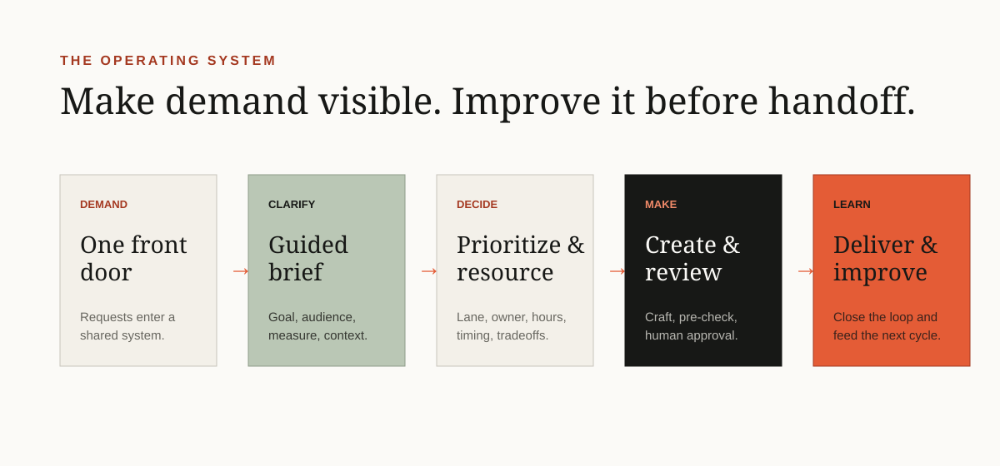

Centralize demand before debating priority.
A shared intake path replaced invisible queues and made the full set of requests easier to compare.
I designed a creative operating system that gave demand one visible path, helped requesters clarify the problem before handoff, and kept judgment and quality with the people doing the work.
Creative requests were arriving through multiple channels with uneven context. That made it difficult to compare urgency, understand capacity, or explain why one request moved before another.
The operating challenge was larger than a project board. The team needed a front door, a better brief, a clear assignment and review path, and a way to learn from what shipped—without turning creative judgment into a checklist.
The brief asks for the goal, audience, destination, measure, and relevant context before work enters the queue.
Priority, ownership, estimated effort, status, and blockers become visible enough to make tradeoffs together.
Automation handles repeatable movement and checks. People still own strategy, taste, craft, and approval.

A shared intake path replaced invisible queues and made the full set of requests easier to compare.
I built a guided brief generator that turned vague requests into clearer problem statements and production context.
Ownership, estimated effort, timing, priority, and blockers created a common language for resourcing decisions.
Pre-checks protected consistency while formal human approval preserved strategic and creative accountability.
The intake automation carried the brief into the system, flagged uncertainty, and surfaced failures instead of guessing.
The operating guide covered statuses, assignment, review, recurring rituals, automation transfer, and maintenance.
The shared creative board made the volume, ownership, status, and constraints of team demand visible.
More than nine in ten tagged requests entered through the AI-guided brief generator.
A team-output measure that shows production scale; it is not presented as individual output.
Created clearer access to context, decision paths, and ownership while coaching people to explain and defend their ideas.
Led the video lane across customer stories, paid creative, launches, events, and recurring production demands.
Managed vendor relationships, budgets, contracts, delivery, cross-functional expectations, and the handoff beyond one leader.